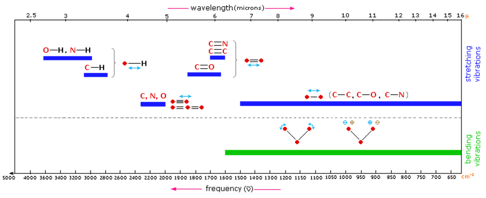
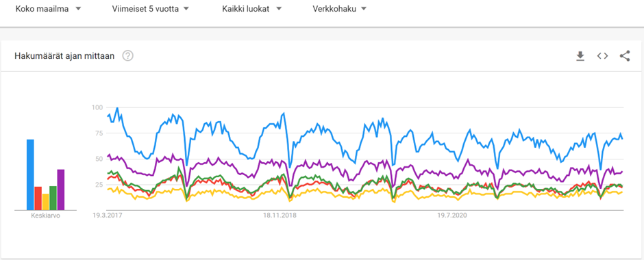
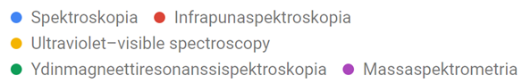

KE3 kirjoitelma spektroskopian lajista
Tietoteksti, artikkeli
Infrapunaspektroskopia on molekyylien rakenteiden tunnistamiseen käytetty menetelmä. Infrapunaspektroskopiassa mitataan infrapunavalon eri aallonpituuksien absorboitumista molekyyleihin. Mittaustuloksista voidaan tehdä päätelmiä molekyylin rakenteesta.
Kun poolista sidosta pommitetaan infrapunavalolla, sidos värähtelee ja resonoi, jos infrapunavalon taajuus on sama kuin sidoksen ominaisvärähtelytaajuus. [2] Osa tai kaikki infrapunavalon energiasta absorboituu sidokseen, mikä saa sidoksen venymään tai taipumaan. [1]
Infrapunaspektrometri heijastaa tietyn aallonpituuden infrapunavaloa tutkittavaan aineeseen ja mittaa, kuinka paljon valosta absorboituu aineeseen. Infrapunaspektrometri mittaa absorbanssia tai transmittanssia infrapunavalon aallonpituuden tai taajuuden funktiona. [4][5]
Tutkittava nestemäinen aine sijoitetaan spektrometriin läpinäkyvien kaliumbromidilevyjen [3] tai muista suoloista tehtyjen levyjen väliin. Lasia ei voi käyttää, koska se absorboi infrapunavaloa. [5] Jos aine on huoneenlämmössä kiinteässä olomuodossa, se liuotetaan tai jauhetaan. Jos kiinteä aine liuotetaan, on tärkeää ottaa huomioon liuottimen vaikutus tuloksiin, koska liuottimena käytetty aine voi myös absorboida infrapunavaloa. On suositeltavaa, että aluksi tehdään ajo pelkällä liuottimella, jolloin voidaan laskea liuoksen spektrin ja liuottimen spektrin erotus, jolloin jäljelle jää ainoastaan tutkittavan aineen spektri. [3] Veden kanssa pitää olla varovainen, koska kaliumbromidista ja monista muistakin suoloista tehdyt preparaattilasit liukenevat hyvin veteen. [6]
2-butanonin infrapunaspektri. Transmittanssi aaltoluvun funktiona. [4]
Kuvassa on esimerkki infrapunaspektrometrin tuottamasta kuvaajasta. Kuvaajassa esiintyy yleensä muutamia voimakkaita piikkejä. Alueella, jolla aaltoluku on suurempi kuin 1 500, piikit voidaan tunnistaa jonkin sidostyypin tai funktionaalisen ryhmän värähtelyksi.
Infrapunaspektrissä eri taajuuksilla havaittavia sidoksia ja funktionaalisia ryhmiä. [5]
Kun vertaamme kirjan esimerkkispektriä ja Michiganin yliopiston viitemateriaalia, huomaamme, että kirjaan merkityt C-H ja C=O -piikit ovat löydettävissä viitemateriaalista samoilta taajuuksilta.
Spektriä ja viitemateriaalia vertaamalla voi löytää yhdisteestä funktionaalisia ryhmiä, mutta ei voi tunnistaa, mikä aine on kyseessä. Alueella, jolla aaltoluku on pienempi kuin 1 500, esiintyy eri yhdisteille ominaisia piikkejä, joita ei voi yhdistää mihinkään sidostyyppiin tai funktionaaliseen ryhmään. Tätä aluetta kutsutaan sormenjälkialueeksi. [5][4] Kun tämän alueen piikkejä vertaa spektrikirjastoon, voi löytää yhdisteen, jolla on samanlainen sormenjälkialue. Näin yhdisteen voi tunnistaa ja nimetä.
Verrataan eri spektroskopian lajien yleisyyttä Google Trends -palvelulla, joka vertaa termien hakumääriä.
 Tuloksista [7] huomataan, että massaspektrometria on yleisin spektrometrian laji Googlen verkkohaussa. Infrapunaspektroskopia on yhtä yleinen kuin NMR-spektroskopia.
Kaikilla spektroskopian lajeilla on omat käyttökohteensa. Oletan, että jotkin spektrometrit maksavat enemmän kuin toiset, koska ”ydinmagneettiresonanssi” kuulostaa kalliimmalta kuin ”infrapuna.” On todennäköistä, että spektrometriä ostettaessa kiinnitetään huomiota laitteen hintaan. Siksi halvemmat spektroskopian lajit voisivat olla yleisempiä kuin kalliimmat lajit.
Minun oli vaikea aloittaa työn tekeminen, koska se tuntui liian suurelta projektilta. Kun oppimateriaalit lopettivat toimimisen, en ollut vielä aloittanut työtä. Tekninen ongelma oli tekosyy, jolla siirsin työn tekemistä myöhempään ajankohtaan. Nyt kemian tunnin ainoana etätehtävänä oli tehdä kirjoitelmaa, joten minähän tein. Nyt jälkikäteen on yllättävää, että työn tekemiseen meni vain kaksi tuntia. Aloitin työn tekemisen tiedonhaulla. Löysin erinomaisia lähteitä tehokkaasti. Onnistuin lähteiden referoinnissa ja yhdistelyssä tekstiä kirjoittaessani. Sain aikaan johdonmukaisen tekstin, josta olen ylpeä.
2022/3/18